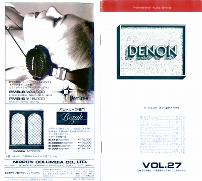
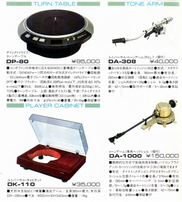
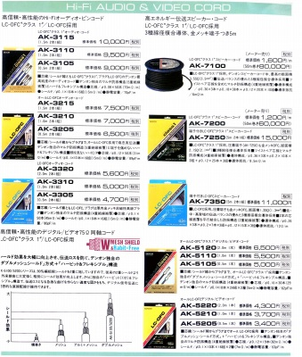

DENON カタログギャラリー
(カタログ画像をクリックすると原寸大のPDFファイルが開きます）
(番外）1979.2月総合カタログ
この時点ではコロムビア名義のヘッドフォンはあったが、DENOMブランドの中にはまだヘッドフォンはなかった。裏表紙に当時取り扱っていたピアレスのヘッドフォンの宣伝がある。

�@1981.1月ヘッドフォンカタログ
ヘッドフォンがDENONに移行した当初のカタログ。
�A1984.11月総合カタログ
レコード・テープがCDを上回っていたアナログ時代末期のカタログ。
�B1986.10月総合カタログ
�C1987.4月総合カタログ
ＣＤが完全に主流となった頃のカタログ。

（このころはまだターンテーブル単体などが残っていた）
�D1989.8月総合カタログ
オーディオメーカーがビジュアル機器に盛んに手を出していた頃のカタログ。

（DENONは線材ではLC-OFCを主力としていた）
�E1994.12月総合カタログ
バブルの遺産の高額モデルと低価格製品の二極化が目立ち始めた頃のカタログ。
�F1996.4月総合カタログ